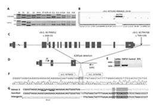

Clotho
We develop the Clotho BioCAD ecosystem with the Densmore Lab at Boston University. Clotho provides the glue that allows diverse software tools to work seamlessly with one another through automated workflows that enable formal design of genetic systems. It also provides the means of hosting online training through Trails and the sharing of user-generated content. Learn More
Act Ontology and Synthesizer
Act uses a data driven approach to encapsulate information about gene function to enable automated design of genetic devices. Based on the Act Formalism that describes biochemical function in terms of a Mealy Machine, we describe what parts do in a cell in a way that enables the prediction of off-site interactions and the encoding of function that does not exist in nature. The Act Synthesizer allows you to compute all potential biosynthetic pathways for a chemical target and ranks them by the probability of success. Act will reside within the Clotho ecosystem allowing the connections of automated pathway design to automated fabrication and lab management tools. Learn More

Multiplex Characterization
New technologies for DNA synthesis and sequencing using multiplex methods provides the opportunity to use DNA read and write cycles not only to generate more genetic designs, but also to interrogate the function of genes. In these projects, we employ microarray gene synthesis to construct 1000 member libraries of parts, and then translate the function of these parts into function information through simple biochemical assays with deep sequencing readouts. The data from these experiments is fed into the Act Ontology improving the quality and scope of its predictions. Learn More
Act Ontology and Synthesizer
What makes a genetically engineered system safe or dangerous, and how do we know a system is not dangerous? Is it simply viruses and pathogens that we must worry about, or do the new tools of synthetic biology introduce new risks? Biosafety assessment is being introduced into our design tools to help mitigate unintended consequences of genetically engineered systems. Also, we develop biosafety strains to mitigate the unintended spread of engineered systems. Learn More